| Titolo | Trust Server Manager. Manuale tecnico e applicativo |
| Codice | TT-TSM-MAN-01 |
| Versione | 0.4.3 |
| Data | 28 ottobre 2026 |
| Stato | Bozza |
| Redatto da | M. Zandonella |
| Verificato da | |
| Classificazione | Uso interno |
| Rilascio software | TSM 0.4.x su tsm-prd |
| Versione | Data | Modifiche |
|---|---|---|
| 0.3 | 27/10/2026 | Prima emissione, in concomitanza con l'installazione su tsm-prd. |
| 0.4 | 28/10/2026 | Password minima di 12 caratteri con indicatore di robustezza; blocco dell'utenza dopo accessi falliti, con soglia impostabile e sblocco da amministratore; monitoraggio, FIM e ripristino automatico spostati nella cartella sistemistica ops/. |
| 0.4.1 | 28/10/2026 | Recupero della password via email con codice monouso; indirizzo email sulle utenze; reimpostazione da amministratore con password scelta; provvisorie in gruppi facili da ridigitare; al cambio obbligatorio la provvisoria non si ridigita e la nuova va confermata. |
| 0.4.2 | 29/10/2026 | Schermate nella parte applicativa; import dei seriali dei rack dall'applicazione; tetto ai log dei container; pulizia notturna dei dati di accesso dopo 90 giorni; controllo Nagios della manutenzione.; dump notturno del database con 14 copie e procedura di ripristino; uscita per inattività; dati personali modificabili dal Profilo; pagina «Stato del sistema» per gli amministratori |
| 0.4.3 | 29/10/2026 | Impostazioni come pagina a schede; Profilo solo personale; email in HTML con logo; failover fra due relay SMTP; uscita di rete per gli avvisi di scadenza; «Password dimenticata?» sempre visibile; motivi espliciti nello stato del sistema. |
Il documento descrive l'installazione di produzione di Trust Server Manager (TSM) e il suo utilizzo. La Parte I è rivolta a chi amministra il server; la Parte II a chi usa l'applicazione.
| Documento | Contenuto |
|---|---|
deploy/README.md | Procedura completa di installazione e gestione, con le motivazioni delle scelte |
deploy/RELEASE-MANIFEST.md | Identità e qualificazione del rilascio |
deploy/PREDEPLOYMENT-GATES.md | Requisiti di pre-installazione e loro stato |
deploy/baseline/MANIFEST.md | Struttura iniziale: siti, sale e rack |
I comandi si intendono eseguiti come root su tsm-prd, dalla directory /opt/tsm salvo diversa indicazione. Le righe che iniziano con # negli esempi sono commenti.
Server, componenti, sicurezza, aggiornamenti, backup e monitoraggio.
TSM è un'applicazione web interna per la gestione delle sale server: siti, sale, rack e dispositivi installati, con le relative scadenze di garanzia e supporto. Gira su una sola macchina virtuale come insieme di container Docker, avviati da systemd.
| Servizio | Funzione | Reti | Utente |
|---|---|---|---|
| web | Serve l'interfaccia, termina TLS e inoltra le chiamate /api. Pubblica le porte 80 (reindirizzamento) e 443. | edge, internal | uid 101 |
| api | Autenticazione, inventario, ricerche, foto, impostazioni e registro delle modifiche. | edge, internal | uid 10001 |
| worker | Invio degli avvisi di scadenza e pulizia delle foto non più referenziate. Ne è attiva una sola istanza. | internal | uid 10001 |
| db | Database PostgreSQL 17, con i dati sul disco dedicato. | internal | uid 70 |
| migrate | Allinea lo schema del database e imposta le password dei ruoli, quindi termina. | internal | uid 10001 |
I container girano con filesystem in sola lettura, senza capability aggiuntive e con l'opzione no-new-privileges. Le immagini sono identificate per digest; il file deploy/release.pin riporta quelle del rilascio installato.
| Hostname | tsm-prd |
| Indirizzo IP | 10.11.43.230; l'applicazione risponde su https://10.11.43.230 |
| Sistema operativo | Oracle Linux Server 10.1, kernel UEK |
| CPU e memoria | 4 vCPU, 8 GB di RAM (7,25 GB visibili; 448 MB riservati a kdump) |
| Swap | 8 GB, volume logico ol/swap |
| SELinux | Disattivato |
| firewalld | Non attivo |
| Docker | Docker Engine 29.9 e Compose 5.6, da pacchetti RPM ufficiali installati manualmente (non disponibili nei repository interni) |
| Accesso utenti | Esclusivamente tramite il web gateway |
| Disco | Ruolo | Contenuto |
|---|---|---|
sdb, 100 GB | Sistema | /boot e il volume group ol: /, /var (comprende /var/lib/docker), /opt, /home, /tmp e lo swap. Nel volume group restano circa 20 GB non assegnati. |
sda, 100 GB | Dati | Filesystem XFS con etichetta tsm-data, montato su /srv/tsm-data tramite UUID in /etc/fstab. Contiene soltanto i dati di PostgreSQL. |
Il disco dati è sda e quello di sistema è sdb. Prima di qualsiasi intervento sui dischi verificare con lsblk e findmnt -M /srv/tsm-data.
Se il disco dati non è montato il servizio non si avvia: lo impediscono la dipendenza RequiresMountsFor dell'unità systemd e il controllo di preflight. In assenza di questi controlli PostgreSQL inizializzerebbe un database vuoto sul disco di sistema.
/opt/tsm contiene solo il pacchetto di rilascio prodotto da tools/release-bundle.sh: non è un repository git e non contiene file di sviluppo. Segreti, certificato e .env vengono creati sul server e non fanno parte del pacchetto.
Il servizio è l'unità systemd tsm.service, abilitata all'avvio. Alla partenza systemd attende il montaggio di /srv/tsm-data, esegue il preflight e avvia i container con docker compose up -d. Lo stato atteso è active (exited).
# stato systemctl status tsm.service --no-pager docker compose ps # db, api, web, worker e backup devono risultare healthy # arresto, avvio, riavvio systemctl stop tsm.service systemctl start tsm.service systemctl restart tsm.service # log journalctl -u tsm.service -n 50 --no-pager docker compose logs --tail 100 api # oppure web, worker, db # disponibilità dell'applicazione curl -sk https://10.11.43.230/api/ready
L'unità non viene riavviata automaticamente in caso di errore (Restart=no): un rifiuto del preflight indica una causa strutturale, come il disco dati assente o il certificato mancante, che va risolta prima di riprovare. I singoli container si riavviano invece autonomamente (restart: unless-stopped).
Il controllo deploy/preflight.sh --dir /opt/tsm può essere eseguito manualmente in qualsiasi momento e non modifica nulla. Termina con codice 0 se tutti i requisiti sono soddisfatti; in caso contrario il codice indica il requisito mancante (paragrafo 9.3).
Secure e SameSite=Strict; in produzione l'applicazione non si avvia con impostazioni diverse.TSM_PUBLIC_ORIGIN.| Ruolo | Utilizzato da | Privilegi |
|---|---|---|
tsm | migrate, manutenzione | Proprietario dello schema |
tsm_api | api | Lettura e inserimento; lo storico dell'inventario non è modificabile |
tsm_worker | worker | Come tsm_api, più la cancellazione delle foto non referenziate |
Le password sono montate come secret Docker e non come variabili d'ambiente, quindi non compaiono in docker inspect né nei log.
Una sessione senza richieste per più dei minuti impostati in «Sicurezza accessi» (60 in modo predefinito; 0 la disattiva, altrimenti fra 15 e 720) viene chiusa dal server e revocata; il browser torna da solo alla schermata di accesso con il motivo. Resta comunque la durata massima di 12 ore.
Dopo un numero di accessi falliti consecutivi (5 in modo predefinito, impostabile fra 3 e 20 dagli amministratori in Impostazioni, scheda «Sicurezza accessi») l'utenza viene bloccata. Il blocco non scade: un'utenza bloccata non entra nemmeno con la password corretta finché un amministratore non la sblocca con il pulsante «Sblocca». Anche la reimpostazione della password e la riattivazione sbloccano l'utenza. Blocco, sblocco e cambio di soglia sono registrati nel registro di audit.
Se l'unico amministratore è bloccato, lo sblocco si esegue dal server:
cd /opt/tsm docker compose run --rm migrate python scripts/unlock_user.py <utenza>
Resta inoltre un limite per indirizzo IP (100 tentativi falliti in 15 minuti) contro i tentativi in massa. Poiché tutti accedono dal web gateway il limite è condiviso, per questo è volutamente alto.
Ogni notte alle 03:45 il worker cancella i tentativi di accesso, le sessioni chiuse e i codici di recupero più vecchi di 90 giorni (TSM_AUTH_RETENTION_DAYS in .env, minimo 30). Il registro di audit non viene toccato: accessi falliti, blocchi e recuperi restano lì. Ogni giro lascia una riga in maintenance_runs e, se ha cancellato qualcosa, una riga di audit con i conteggi.
Ogni container tiene al massimo 5 file di log da 10 MB, ruotati da Docker (compose.yaml, dalla 0.4.2). Il predefinito del demone Docker e il tetto al journal di sistema sono lato sistemistico, in ops/README.md.
Dalla schermata di accesso, «Password dimenticata?» invia all'indirizzo registrato sull'utenza un codice di 12 caratteri (ABCD-EFGH-JKMN) e un link che compila già utenza e codice. Il codice vale 30 minuti, si usa una volta e dopo 5 tentativi errati decade; una nuova richiesta annulla la precedente, con un massimo di 3 richieste all'ora per utenza. Nel database resta solo l'hash del codice.
Il certificato è emesso da una CA interna creata con deploy/make-internal-tls.sh. Riporta l'indirizzo 10.11.43.230 e il nome tsm-prd, ha validità di 825 giorni e scade il 28 gennaio 2029. Il certificato della CA (secrets/tls/ca-interna.crt) è installato sul web gateway tra le autorità di certificazione radice attendibili.
# rinnovo con la stessa CA: sul gateway non serve alcuna modifica
bash deploy/make-internal-tls.sh --ip 10.11.43.230 --name tsm-prd --force
docker compose restart web
/root/tsm-ca e va conservata preferibilmente fuori dal server, riportandola solo per i rinnovi.--ip e si aggiorna TSM_PUBLIC_ORIGIN.--name al certificato e la relativa origine in .env, separata da virgola.I parametri non riservati sono nel file /opt/tsm/.env, letto automaticamente da Docker Compose.
TSM_PUBLIC_ORIGIN=https://10.11.43.230 TSM_SMTP_HOST=legolas1,legolas2 # uno o più relay, provati in ordine TSM_SMTP_PORT=25 TSM_SMTP_TLS_MODE=none # starttls, tls oppure none (Legolas su 25: none) TSM_SMTP_SENDER=t-servermanager@ittelecom.it TSM_SMTP_USERNAME= # vuoto: relay che accetta per indirizzo IP
secrets/smtp_password (permessi 0400, uid 10001), non in .env.TSM_ENV e TSM_COOKIE_SECURE non vanno impostati: i valori predefiniti sono quelli di produzione e un valore diverso blocca l'avvio (codice 40).Dall'applicazione si configurano destinatari, anticipo e orario degli avvisi. Server, porta, cifratura, mittente e credenziali del relay si configurano esclusivamente nel file .env. Dopo una modifica:
docker compose up -d api worker
La configurazione si verifica con il pulsante «Invia messaggio di prova» in Impostazioni, scheda Notifiche (al massimo 3 prove all'ora per utente).
TSM_SMTP_HOST si passa al successivo solo se il precedente non risponde; un rifiuto (destinatario, mittente, cifratura) non fa cambiare relay, perché gli altri risponderebbero allo stesso modo.egress).Il server non accede a internet. Ogni rilascio viene preparato sulla postazione di sviluppo come pacchetto comprensivo delle immagini Docker (tsm-images.tar) e trasferito sul server. L'aggiornamento non modifica dati, utenze, segreti, certificato e .env.
bash tools/build-release.sh git add deploy/release.pin git commit -m "release: pin <commit>" bash tools/release-bundle.sh --out <cartella> --with-images
/opt/tsm, sovrascrivendo i file esistenti.chmod 0750 deploy/*.sh accettazione/*.sh.bash accettazione/release-bundle.sh --verify /opt/tsm.docker load -i tsm-images.tar, quindi eliminare il file.bash deploy/preflight.sh --dir /opt/tsm.systemctl restart tsm.service. Le eventuali migrazioni dello schema vengono applicate automaticamente.docker compose ps e verificare l'interfaccia dal web gateway.Ogni rilascio ha un tag distinto (0.3.1, 0.4.0 e successivi). Dopo la verifica le immagini precedenti si rimuovono con docker rmi tsm-api:<versione> tsm-web:<versione>.
Il backup è eseguito a livello di macchina virtuale con Veeam, a cura del gruppo che gestisce i backup. Requisiti per TSM:
/var/lib/docker non contiene dati applicativi: le immagini si ricaricano dal pacchetto di rilascio.Dalla 0.4.2 il servizio backup scrive ogni notte alle 02:15 un dump completo del database in /srv/tsm-data/backups (formato pg_dump -Fc, file tsm-AAAAMMGG-HHMMSS.dump, permessi 0600) e conserva gli ultimi 14. Il file prende il nome definitivo solo dopo essere stato riletto per intero. Esito, dimensione e spazio libero del disco dati sono visibili nella pagina «Stato del sistema» e controllati da check_tsm_maintenance. Orario e numero di copie si cambiano in .env (TSM_DUMP_HOUR, TSM_DUMP_MINUTE, TSM_DUMP_KEEP).
Il dump non sostituisce Veeam: Veeam salva la macchina, il dump è una copia sicuramente coerente del solo database, ripristinabile anche su un'altra installazione. Un dump si può lanciare a mano prima di un intervento:
docker compose exec backup sh /opt/tsm-backup/backup.sh --now
# 1. fermare il ripristino automatico e i servizi che scrivono systemctl stop tsm-autoheal.timer cd /opt/tsm docker compose stop api worker web backup # 2. ripristinare (sostituisce il contenuto attuale del database) ls -lt /srv/tsm-data/backups | head docker compose cp /srv/tsm-data/backups/tsm-AAAAMMGG-HHMMSS.dump db:/tmp/r.dump docker compose exec -T db pg_restore -U tsm -d tsm --clean --if-exists --single-transaction /tmp/r.dump docker compose exec -T db rm /tmp/r.dump # 3. ripartire (le migrazioni si riapplicano se il dump è di una versione precedente) systemctl restart tsm.service systemctl start tsm-autoheal.timer
Con --single-transaction il ripristino è tutto o niente: se fallisce, il database resta com'era. Le modifiche successive al dump vanno perse.
findmnt -M /srv/tsm-data bash deploy/preflight.sh --dir /opt/tsm systemctl restart tsm.service docker compose ps docker compose run --rm migrate python scripts/project.py --verify
Un amministratore può esportare dall'applicazione il JSON completo (struttura, inventario e registro). È consigliato prima di interventi rilevanti.
Monitoraggio, integrità dei file e ripristino automatico sono attività sistemistiche: i relativi file stanno nella cartella ops/ del repository, documentata in ops/README.md, non fanno parte del pacchetto di rilascio e un aggiornamento dell'applicazione non li modifica.
I controlli sono eseguiti via NRPE dallo script /usr/local/lib/tsm/check_tsm.sh. L'utente nrpe lo esegue tramite sudo, con una regola limitata allo script e ai suoi argomenti; non appartiene al gruppo docker. Nomi e soglie sono in corso di allineamento agli standard di monitoraggio del gruppo.
| Comando | Verifica | Intervallo |
|---|---|---|
check_tsm_service | docker.service e tsm.service attivi | 5 min |
check_tsm_containers | db, api, web, worker e backup in esecuzione e in stato healthy | 5 min |
check_tsm_storage | disco dati montato e scrivibile; occupazione, soglie 75 e 90 % | 5 min |
check_tsm_ready | risposta di /api/ready attraverso nginx | 5 min |
check_tsm_worker | attività del worker e possibilità effettiva di inviare avvisi | 15 min |
check_tsm_runs | cicli di notifica non conclusi da oltre un'ora | 60 min |
check_tsm_cert | scadenza del certificato, soglie 30 e 7 giorni | giornaliero |
check_tsm_images | corrispondenza tra immagini in esecuzione e rilascio installato | giornaliero |
check_tsm_maintenance | pulizia foto orfane, pulizia dei dati di accesso e dump del database eseguiti negli ultimi due giorni | giornaliero |
/opt/tsm, inclusi secrets/ e .env/etc/systemd/system/tsm.service/etc/docker/ e /etc/fstab/etc/sudoers.d/tsm-nrpe, /etc/nrpe.d/tsm.cfg, /usr/local/lib/tsm//etc/systemd/system/tsm-autoheal.*/root/tsm-ca/, se presente/srv/tsm-data/postgres: file del database, in continua modifica/srv/tsm-data/backups: dump notturni, cambiano ogni giorno/var/lib/docker: livelli delle immagini, stato e log dei containerL'integrità delle immagini è verificata da check_tsm_images.
| Codice | Significato |
|---|---|
| 10, 11, 12 | Docker non disponibile; compose.yaml non valido; immagine non presente |
| 20, 21 | /srv/tsm-data non montato, oppure coincidente con il filesystem di sistema |
| 22–25 | Directory dei dati assente, con proprietario diverso da 70:70, con permessi più ampi di 0700 o non scrivibile |
| 26 | Spazio libero sul disco dati inferiore a 5 GiB |
| 27, 28 | Contesto SELinux, solo con SELinux attivo |
| 30, 31 | Secret mancante o con permessi errati; certificato o chiave mancanti o non leggibili da nginx |
| 40–42 | Configurazione non di produzione |
| Sintomo | Verifica e intervento |
|---|---|
| Il servizio non riparte dopo un riavvio | systemctl status tsm.service; il codice del preflight indica la causa. Se il disco dati non è montato, ripristinare il montaggio prima di riavviare. |
| Un container è unhealthy | Il timer tsm-autoheal lo riavvia (massimo 3 volte all'ora; journalctl -t tsm-autoheal). Se si ripresenta: docker compose logs --tail 200 <servizio>; per il database controllare spazio e permessi di /srv/tsm-data. |
| «No such image: postgres@sha256:…» | L'immagine di PostgreSQL è priva di nome: docker tag sha256:742f40ea… postgres:17-alpine. |
| Avviso sul certificato nel browser | CA non installata sul gateway, certificato scaduto o accesso con un indirizzo non presente nel certificato. |
| «Utenza bloccata» al login | Troppi accessi falliti: un amministratore la sblocca da «Utenti e privilegi». Se è bloccato l'unico amministratore: scripts/unlock_user.py. |
| Accesso negato a tutti per «troppi tentativi» | Superato il limite per indirizzo IP del gateway. Attendere 15 minuti. |
| Gli avvisi di scadenza non arrivano | check_tsm_worker, parametri SMTP in .env, invio di prova dalle Impostazioni. |
Password provvisoria di admin non disponibile | Disattivare admin e crearne un altro con scripts/bootstrap.py --admin admin2 (deploy/README.md, §3.7). L'inventario non viene modificato. |
Sale, rack e dispositivi, ricerche, viste, importazione ed esportazione, utenze e notifiche.
TSM descrive le sale server dell'azienda: la posizione di ogni rack, i dispositivi installati, lo spazio disponibile e le scadenze di garanzie e contratti di supporto.
La struttura iniziale (siti, sale con la relativa pianta, rack con nome, fila, altezza e numeri di inventario) è stata caricata all'installazione. I dispositivi si inseriscono dall'applicazione, singolarmente o tramite il modello Excel (capitolo 16).
Ogni modifica genera una nuova versione dell'inventario e una voce nel registro, con autore e data. Le versioni precedenti restano conservate.
L'applicazione si apre all'indirizzo https://10.11.43.230 dal browser del web gateway. Sono supportati Firefox, Chrome ed Edge. Al primo accesso con una password provvisoria l'applicazione ne richiede la sostituzione, senza chiedere di ridigitare la provvisoria appena usata; la nuova password va scritta due volte e deve avere almeno 12 caratteri e può contenere spazi. Sotto il campo un indicatore ne valuta la robustezza (non sicura, debole, accettabile, sicura): conta soprattutto la lunghezza, e una frase di quattro o cinque parole è la scelta migliore. La versione dell'applicazione è indicata nella schermata di accesso e nella barra superiore.
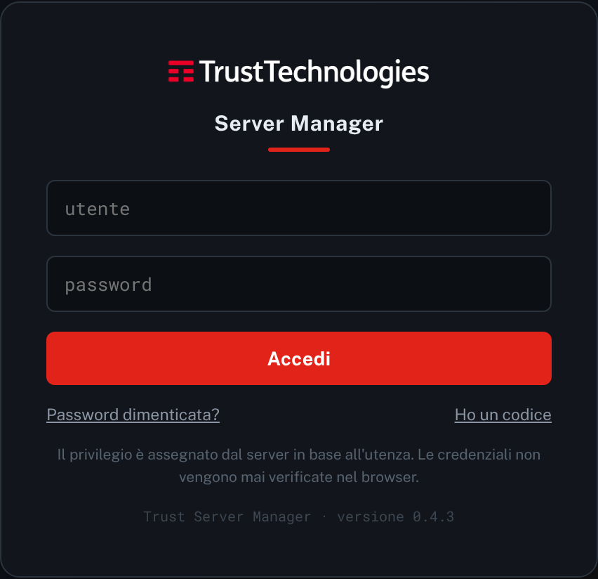
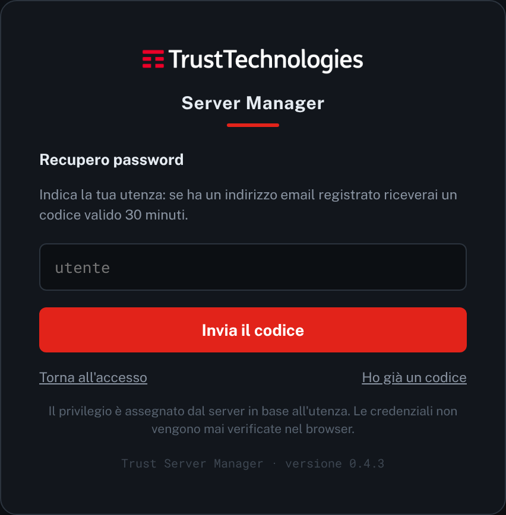
| Privilegio | Funzioni disponibili |
|---|---|
| Visualizzazione | Consultazione di tutti i dati, senza possibilità di modifica. |
| Operatore | Inserimento, modifica, spostamento ed eliminazione dei dispositivi; importazione ed esportazione dell'inventario. |
| Admin | Tutte le funzioni, incluse la gestione della struttura (rack, sale, siti), le notifiche, il registro delle modifiche e le utenze. |
Il selettore in alto a sinistra (Ctrl+E) alterna la modalità di consultazione e quella di modifica. In Editing sono disponibili i comandi consentiti dal proprio privilegio; per le utenze in sola lettura la modalità Editing non è attivabile.
Il profilo si apre dall'icona con le iniziali, nella barra superiore, ed è personale: nome, cognome, telefono ed email si modificano da sé con «Salva dati» (il team lo imposta un amministratore), e da qui si cambia la propria password.
«⚙ Impostazioni» apre una pagina a schede. Per tutti: Generale (manuale, numero di modifiche annullabili, tema Scuro, Chiaro o TIM). Per gli amministratori anche: Importa / Esporta, Notifiche, Utenti e privilegi, Sicurezza accessi, Stato del sistema e Registro.
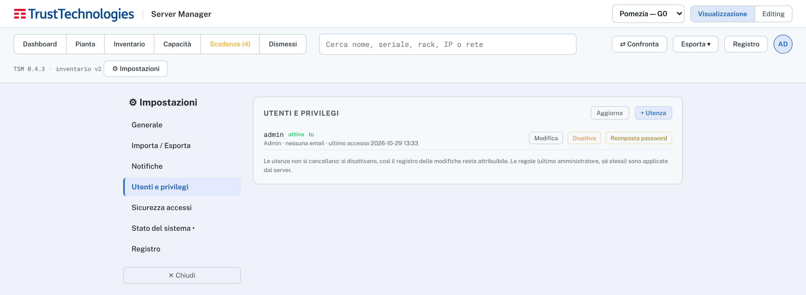
Dopo un periodo senza attività (60 minuti in modo predefinito) la sessione si chiude e si torna alla schermata di accesso: il web gateway è condiviso, e una sessione lasciata aperta resterebbe usabile da chi si siede dopo.
La dashboard (tasto D) riporta il numero di siti, sale, rack e dispositivi e l'occupazione complessiva per tipo di apparato. La fascia «Urgenze e scadenze» è verde in assenza di criticità, ambra o rossa in presenza di scadenze; selezionandola si apre l'elenco. Seguono le schede dei siti e l'occupazione per sala.
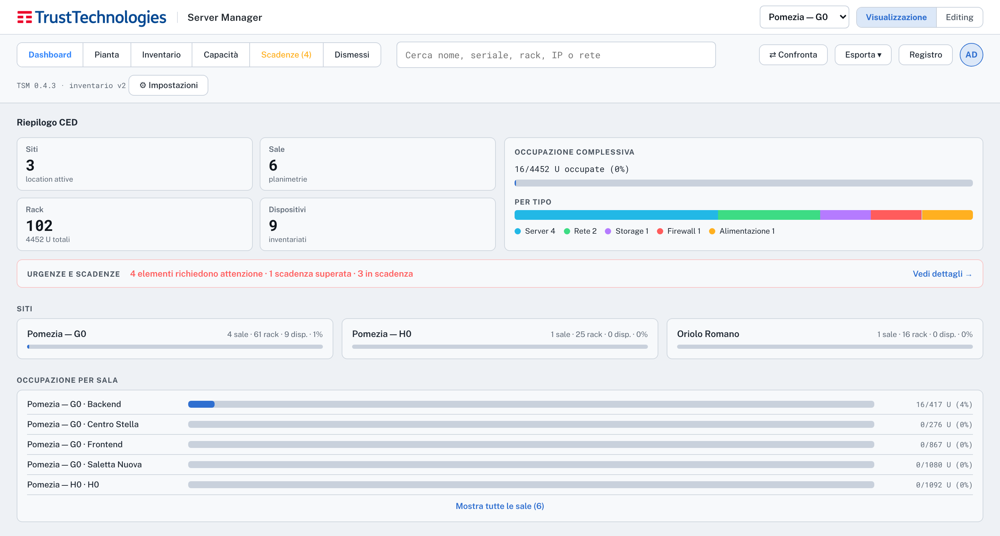
Il sito si seleziona dal menu in alto a sinistra; le sale sono disponibili come schede. La pianta riporta muri, porte e rack con il relativo seriale.
| Operazione | Comando |
|---|---|
| Ingrandimento | Rotellina del mouse |
| Spostamento della pianta | Trascinamento con il tasto sinistro |
| Rotazione di 90° | Pulsante ⟳ |
| Ritorno alla vista iniziale | Pulsante con la percentuale di ingrandimento |
| Apertura di un rack | Clic sul rack; Ctrl+B apre e chiude la scheda |
Con il tasto V la pianta passa alla vista tridimensionale: i dispositivi sono rappresentati come fasce colorate alla quota corrispondente. Il trascinamento ruota il modello, con Shift lo sposta. La legenda permette di filtrare per tipo: Server Rete Storage Firewall Alimentazione.
La scheda mostra la vista frontale con i dispositivi nelle rispettive unità, l'elenco con modello, indirizzo IP, seriale e referente, e la foto del rack. Il pulsante di stampa produce un foglio con vista frontale ed elenco, da applicare all'armadio.
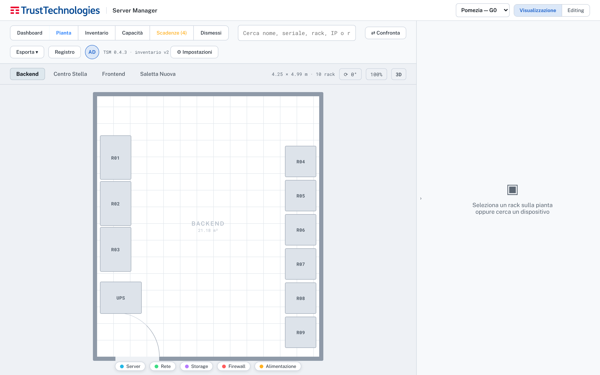
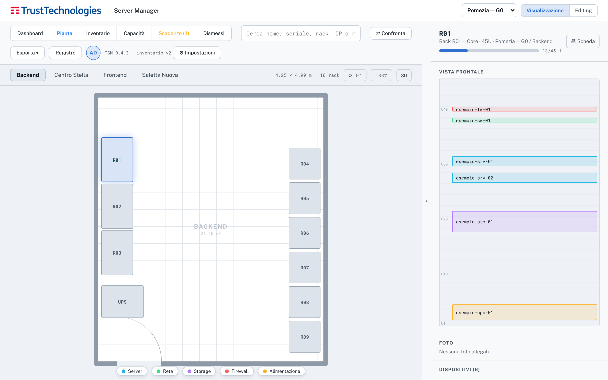
| Campo | Descrizione |
|---|---|
| Nome | Nome dell'apparato. Può essere modificato e non identifica il dispositivo. |
| Tipo | Server, Rete, Storage, Firewall, Alimentazione, Altro. PDU e UPS rientrano in Alimentazione. |
| Stato | Attivo, In manutenzione, In dismissione, Dismesso. |
| Presenza | Presente in rack oppure Rimosso. È indipendente dallo stato: un apparato dismesso può essere ancora installato. |
| U e altezza | Unità di partenza, contata dal basso, e altezza in unità rack. |
| Modello, IP, seriale, referente | Dati descrittivi. IP e seriale sono ricercabili. |
| Garanzia, supporto | Date di scadenza nel formato AAAA-MM-GG, utilizzate per la vista Scadenze e per gli avvisi. |
| Note | Testo libero. |
Le operazioni richiedono il privilegio Operatore e la modalità Editing.
Le funzioni di questo capitolo sono riservate al privilegio Admin.
All'installazione diversi rack riportano sulla pianta il proprio codice (per esempio R01 o SN-R05) in luogo del seriale, non ancora rilevato. I seriali si aggiornano da «⚙ Rack».
La barra di ricerca (tasto / oppure Ctrl+F) opera su tutti i siti: nomi, indirizzi IP, seriali di dispositivi e rack, modelli, referenti e sale. Selezionando un risultato si apre il rack corrispondente e il dispositivo viene evidenziato.
| Ricerca per rete | Esempio |
|---|---|
| Notazione CIDR | 10.0.2.0/24 |
| Intervallo | 10.0.0.1-10.0.0.99 |
| Carattere jolly | 10.0.* |
| Vista | Contenuto |
|---|---|
| Inventario | Elenco di tutti i dispositivi, con ordinamento, filtri e scelta delle colonne. L'esportazione CSV riproduce l'elenco filtrato. |
| Capacità | Per sala e per fila: unità libere e occupate e il maggiore blocco contiguo disponibile. |
| Scadenze | Garanzie e contratti di supporto scaduti (in rosso) o in scadenza (in ambra), con esportazione CSV. |
| Dismessi | Apparati in stato Dismesso, mantenuti per riscontro storico, con esportazione CSV. |
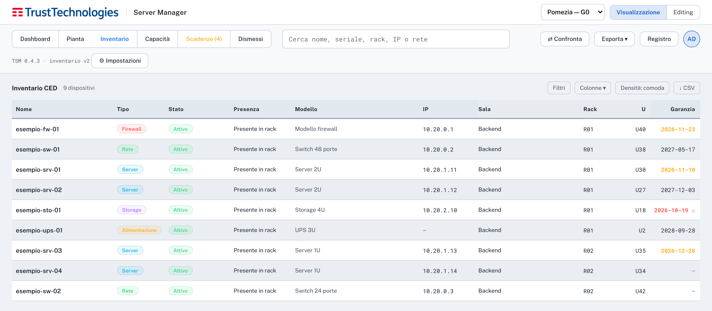
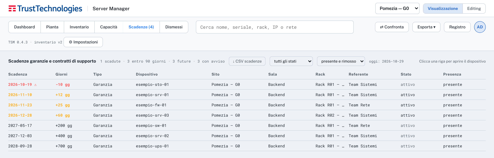
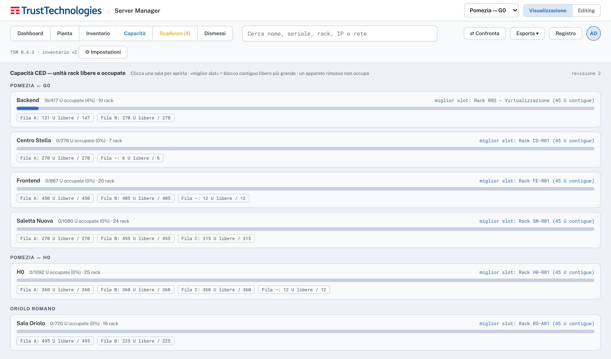
Il file «Modello dispositivi sale.xlsx» consente di caricare i dispositivi in blocco. Si compila il primo foglio, «Dispositivi»:
_uid resta vuota;L'importazione può avvenire in più riprese, per esempio una sala alla volta. Nel foglio sono evidenziate in rosso le righe con dispositivi che eccedono l'altezza del rack.
I seriali dei rack si caricano dall'applicazione, in modalità Editing, dalla pagina Impostazioni, scheda «Importa / Esporta»:
NESSUNO nella prima colonna lo lascia senza seriali. La colonna _uid non va modificata;Si aggiornano solo i seriali di rack esistenti: posizione, dimensioni e struttura delle sale non cambiano. Rack e sale nuovi si creano in Editing, sulla pianta.
| Formato | Contenuto |
|---|---|
| JSON completo | Struttura, inventario e registro. È il formato di backup logico; il ripristino è riservato agli amministratori. |
| CSV dispositivi | Tutti i dispositivi, reimportabile. Mantiene l'identificativo _uid: un file modificato e reimportato aggiorna i dispositivi esistenti. |
| Excel | Fogli Dispositivi, Rack e Sale. |
| Stampa o PDF | La vista corrente. |
La funzione «Confronta» mette a confronto i dati attuali con un rilievo (JSON completo o CSV con almeno le colonne nome e rack) ed elenca dispositivi aggiunti, rimossi, spostati e modificati. Le differenze sono esportabili in Excel.
Il dispositivo è identificato dall'_uid, non dal nome. Una riga senza _uid con un nome presente più volte è ambigua e viene scartata.
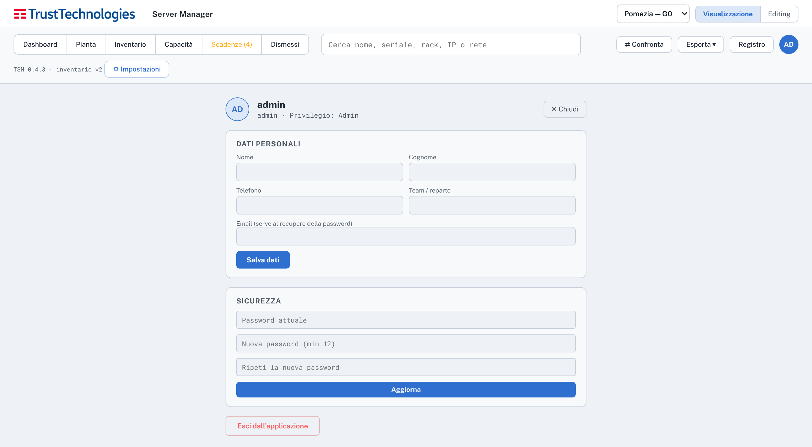
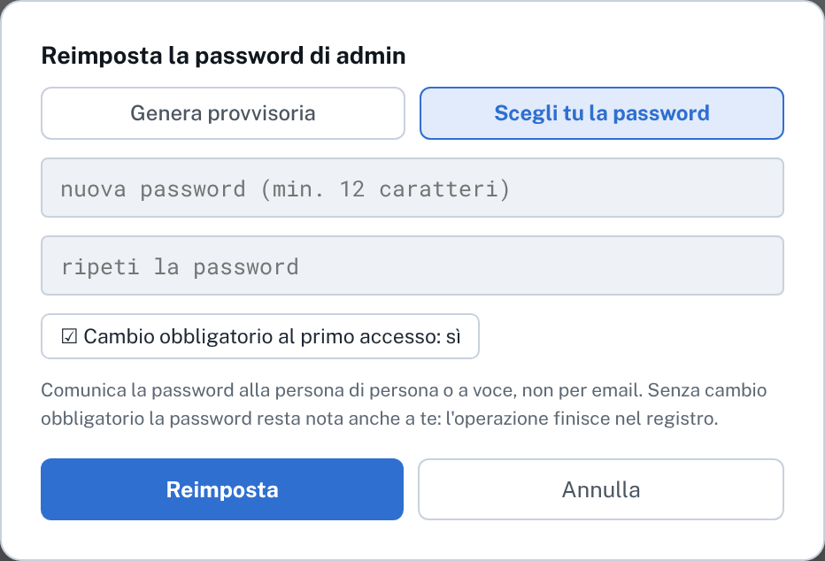
In Impostazioni, Notifiche, si definiscono destinatari (uno per riga), giorni di anticipo, fuso orario e ora di invio; l'anteprima indica quante scadenze rientrano nel periodo. L'invio di prova verifica la configurazione; il numero di prove è limitato e destinatari e testo non sono modificabili. Il server di posta è configurato a livello di sistema (capitolo 6).
Il registro elenca in sola lettura tutte le modifiche, con autore, data e contenuto.
In Impostazioni, scheda «Stato del sistema», gli amministratori trovano un riepilogo dello stato: versione, migrazione del database, battito del worker, ultimi giri di manutenzione, ultimo dump e spazio sul disco dati, configurazione della posta, scadenza del certificato, utenze bloccate o senza email. Ogni voce è verde, ambra o rossa con le stesse soglie dei controlli Nagios; sotto il titolo sono elencate per nome le voci da controllare (per esempio SMTP non configurato o utenze senza email). Non sostituisce il monitoraggio: è un colpo d'occhio per chi usa l'applicazione.
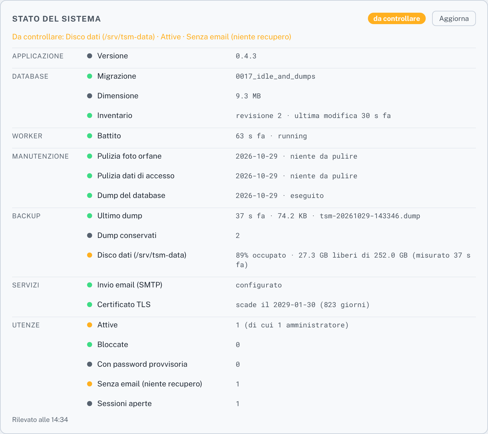
Nella scheda Generale di Impostazioni sono disponibili i temi Scuro (predefinito), Chiaro e TIM, e la scelta del numero di modifiche annullabili (5, 10, 15 o 20).
| Tasti | Funzione |
|---|---|
/, Ctrl+F | Ricerca |
D | Dashboard |
V | Vista 2D o 3D |
Ctrl+E | Visualizzazione o Editing |
Ctrl+B | Scheda del rack |
Ctrl+Z, Ctrl+Y | Annulla, ripristina |
Le scorciatoie non sono attive durante la digitazione in un campo di testo.
tools/release-bundle.sh e installato in /opt/tsm.deploy/release.pin con commit, identificativi delle immagini e digest della baseline del rilascio installato.Le credenziali si sostituiscono secondo la politica aziendale e comunque in caso di sospetta esposizione o di cambio del personale che vi ha accesso. Ogni rotazione comporta un riavvio del servizio, con un'interruzione di circa un minuto.
| Credenziale | Dove si trova | Procedura |
|---|---|---|
Ruolo tsm_api | secrets/api_db_password | B.1 |
Ruolo tsm_worker | secrets/worker_db_password | B.1 |
Ruolo tsm (proprietario) | secrets/postgres_password | B.2 |
| Relay SMTP | secrets/smtp_password | B.3 |
| Certificato TLS | secrets/tls/ | Scheda C.1 |
| CA interna | /root/tsm-ca/ | B.4 |
| Utenze dell'applicazione | database | B.5 |
Il servizio migrate imposta a ogni avvio le password dei ruoli applicativi leggendole dai file dei secret. La rotazione consiste quindi nella sostituzione del file e in un riavvio.
# esempio per tsm_api; per tsm_worker usare worker_db_password cd /opt/tsm cp -p secrets/api_db_password /root/api_db_password.prec # copia per il ripristino umask 077 openssl rand -base64 24 | tr -d '\n+/=' > /root/nuova install -m 0400 -o 10001 -g 10001 /root/nuova secrets/api_db_password shred -u /root/nuova systemctl restart tsm.service docker compose ps -a # migrate: Exited (0); gli altri healthy docker compose logs migrate | grep "password del ruolo"
A verifica conclusa la copia precedente si elimina con shred -u /root/api_db_password.prec. Se migrate termina con errore, si ripristina la copia e si riavvia.
La password del proprietario dello schema è impostata in PostgreSQL alla creazione del database e non viene riletta dal file. Va quindi modificata prima nel database e poi nel file, in quest'ordine: con il solo file aggiornato migrate non riesce ad autenticarsi e il servizio non si avvia.
cd /opt/tsm cp -p secrets/postgres_password /root/postgres_password.prec umask 077 openssl rand -base64 24 | tr -d '\n+/=' > /root/nuova # 1. nel database (la password passa da stdin, non compare nella lista dei processi) printf "ALTER ROLE tsm WITH PASSWORD '%s';\n" "$(cat /root/nuova)" \ | docker compose exec -T db psql -U tsm -d tsm -q # 2. nel file del secret install -m 0400 -o 10001 -g 10001 /root/nuova secrets/postgres_password shred -u /root/nuova systemctl restart tsm.service docker compose ps -a # migrate: Exited (0)
La password si cambia prima sul relay, a cura di chi lo gestisce, poi nel file:
cd /opt/tsm umask 077 read -rs -p "Nuova password SMTP: " P; printf '%s' "$P" > /root/nuova; unset P install -m 0400 -o 10001 -g 10001 /root/nuova secrets/smtp_password shred -u /root/nuova systemctl restart tsm.service
La password viene digitata senza eco e non resta nella cronologia della shell. Si verifica con l'invio di prova da Impostazioni, Notifiche.
In caso di compromissione della chiave della CA si crea una nuova CA: si sposta /root/tsm-ca fuori dal server, si esegue deploy/make-internal-tls.sh --ip 10.11.43.230 --name tsm-prd --force, che genera una nuova CA e un nuovo certificato, si riavvia web e si sostituisce il certificato della CA installato sul web gateway.
Ogni utente cambia la propria password dal Profilo, oppure la recupera via email dalla schermata di accesso (paragrafo 5). Un amministratore può reimpostarla con una provvisoria generata o con una password scelta, e può disattivare un'utenza. In caso di perdita della password dell'unico amministratore si procede come indicato nel paragrafo 9.4.
Le schede riportano le operazioni ricorrenti in forma eseguibile. Ogni scheda può essere stampata e allegata alla richiesta di intervento, compilando il riquadro finale.
| Scheda | Operazione | Frequenza |
|---|---|---|
| C.1 | Rinnovo del certificato TLS | entro novembre 2028 |
| C.2 | Aggiornamento a un nuovo rilascio | a ogni rilascio |
| C.3 | Verifica dopo un ripristino da backup | a ogni ripristino e prova |
| C.4 | Creazione e disattivazione di un'utenza | su richiesta |
| C.5 | Disco dati in esaurimento | su allarme Nagios |
| Scopo | Emettere un nuovo certificato server con la CA esistente |
| Quando | Allarme check_tsm_cert (30 giorni) e comunque entro novembre 2028 |
| Interruzione | Pochi secondi (riavvio di web) |
| Prerequisiti | Chiave della CA disponibile in /root/tsm-ca |
/root/tsm-ca, se conservata altrove.cd /opt/tsm && bash deploy/make-internal-tls.sh --ip 10.11.43.230 --name tsm-prd --forcedocker compose restart webbash /usr/local/lib/tsm/check_tsm.sh cert riporta circa 825 giorni| Data | Eseguito da | Esito | Firma |
|---|---|---|---|
| Scopo | Installare un nuovo rilascio senza modificare dati e configurazione |
| Quando | A ogni rilascio |
| Interruzione | Circa un minuto |
| Prerequisiti | Pacchetto prodotto da tools/release-bundle.sh; esportazione JSON recente |
root: cp -r ~utente/<pacchetto>/. /opt/tsm/cd /opt/tsm && chmod 0750 deploy/*.sh accettazione/*.shbash accettazione/release-bundle.sh --verify /opt/tsm: esito «pacchetto integro»docker load -i tsm-images.tar && rm tsm-images.tarbash deploy/preflight.sh --dir /opt/tsm: uscita 0systemctl restart tsm.servicedocker compose ps: tutti i servizi healthybash /usr/local/lib/tsm/check_tsm.sh images: OK| Data | Rilascio | Eseguito da | Firma |
|---|---|---|---|
| Scopo | Accertare che la macchina ripristinata contenga i dati e che il servizio funzioni |
| Quando | Dopo ogni ripristino Veeam, incluse le prove periodiche |
| Prerequisiti | Ripristino di entrambi i dischi completato |
findmnt -M /srv/tsm-data: il disco dati è montatobash /opt/tsm/deploy/preflight.sh --dir /opt/tsm: uscita 0systemctl restart tsm.service && docker compose -f /opt/tsm/compose.yaml psdocker compose -f /opt/tsm/compose.yaml run --rm migrate python scripts/project.py --verifycurl -sk https://10.11.43.230/api/ready: "status":"ready"| Data | Backup ripristinato del | Eseguito da | Firma |
|---|---|---|---|
| Scopo | Concedere o revocare l'accesso all'applicazione |
| Quando | Ingresso o uscita di una persona dal gruppo, cambio di ruolo |
| Prerequisiti | Utenza con privilegio Admin |
| Data | Utenza e privilegio | Operazione | Eseguito da |
|---|---|---|---|
| Scopo | Ampliare il disco dati prima che PostgreSQL esaurisca lo spazio |
| Quando | Allarme check_tsm_storage (75 % avviso, 90 % critico) |
| Interruzione | Nessuna: l'ampliamento XFS avviene a caldo |
| Prerequisiti | Ampliamento del disco virtuale da parte di chi gestisce la VM |
df -h /srv/tsm-data e du -sh /srv/tsm-data/postgres /srv/tsm-data/backups. Se pesano i dump, ridurre TSM_DUMP_KEEP.sda.echo 1 > /sys/class/block/sda/device/rescan, poi lsblk /dev/sda.growpart /dev/sda 1xfs_growfs /srv/tsm-dataOperare solo su sda, il disco dati. Verificare prima con lsblk e findmnt -M /srv/tsm-data.
df -h /srv/tsm-data riporta la nuova dimensionebash /usr/local/lib/tsm/check_tsm.sh storage: OK| Data | Dimensione prima / dopo | Eseguito da | Firma |
|---|---|---|---|